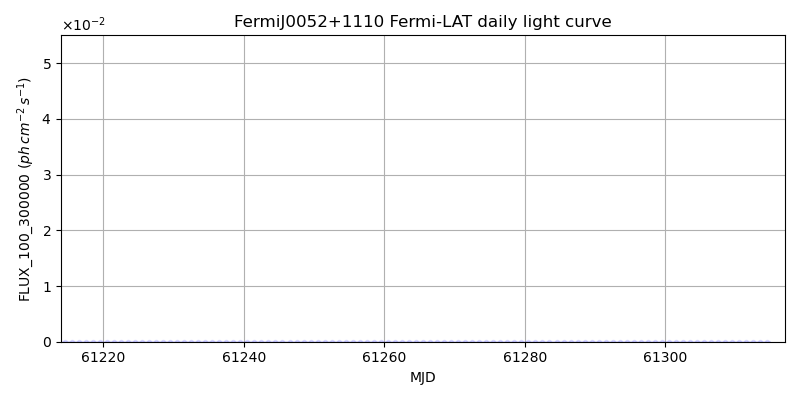
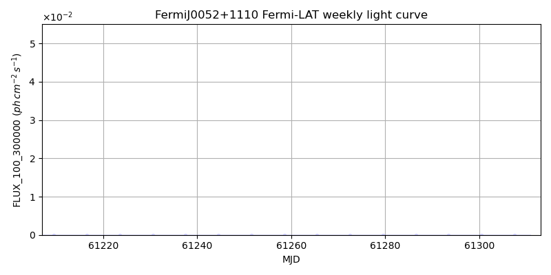
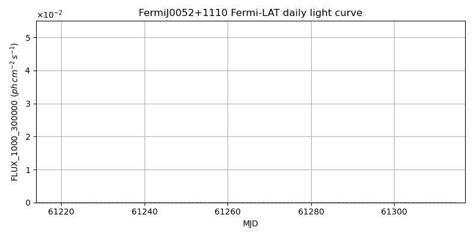
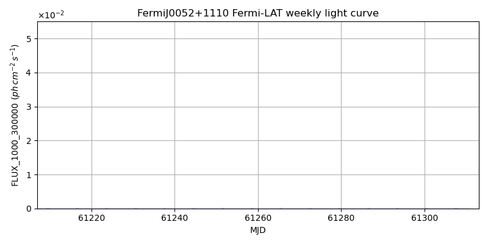

LAT Lightcurve site: https://fermi.gsfc.nasa.gov/ssc/data/access/lat/msl_lc/source/Fermi_J0052p1110
NED: Query
Time of last update of this page: UT: 2026-10-02 15:11 (MJD: 61315.633)
| Property | Value |
|---|---|
| R.A. | 0:52:21.60 |
| Dec. | 11:09:36.0 |
| z | 0.000 |
| 3FGL SpectrumType | |
| 3FGL PL Index | -1.00 |
| 3FGL Flux_100_300000 | -1.00e+00 |
| 3FGL Flux_1000_300000 | -1.00e+00 |
| 3FGL Flux >200 GeV | -1.00e+00 |
| 3FGL Extrap. Crab >200 GeV | -1.00 |
| 3FGL Flux After EBL Absorption >200GeV | -1.00e+00 |
| 3FGL EBL Crab Fraction >200GeV | -1.00 |

| MJD | dMJD | Flux | dFlux | Frac3FGL | FracCrab>200GeV | EBLFracCrab>200GeV |
|---|---|---|---|---|---|---|
| 61310.50 | 0.50 | 9.34e-07 | 0.00e+00 | 0.00 | 0.00 | -0.00 |
| 61311.50 | 0.50 | 1.55e-07 | 0.00e+00 | 0.00 | 0.00 | -0.00 |
| 61312.50 | 0.50 | 1.10e-07 | 0.00e+00 | 0.00 | 0.00 | -0.00 |
| 61313.50 | 0.50 | 3.71e-07 | 0.00e+00 | 0.00 | 0.00 | -0.00 |
| 61314.50 | 0.50 | 1.03e-07 | 0.00e+00 | 0.00 | 0.00 | -0.00 |

| MJD | dMJD | Flux | dFlux | Frac3FGL | FracCrab>200GeV | EBLFracCrab>200GeV |
|---|---|---|---|---|---|---|
| 61279.50 | 3.50 | 1.12e-07 | 0.00e+00 | 0.00 | 0.00 | -0.00 |
| 61286.50 | 3.50 | 1.23e-07 | 0.00e+00 | 0.00 | 0.00 | -0.00 |
| 61293.50 | 3.50 | 3.14e-08 | 0.00e+00 | 0.00 | 0.00 | -0.00 |
| 61300.50 | 3.50 | 1.50e-07 | 0.00e+00 | 0.00 | 0.00 | -0.00 |
| 61307.50 | 3.50 | 3.95e-08 | 0.00e+00 | 0.00 | 0.00 | -0.00 |

| MJD | dMJD | Flux | dFlux | Frac3FGL | FracCrab>200GeV | EBLFracCrab>200GeV |
|---|---|---|---|---|---|---|
| 61310.50 | 0.50 | 1.64e-08 | 0.00e+00 | 0.00 | 0.00 | -0.00 |
| 61311.50 | 0.50 | 4.03e-08 | 0.00e+00 | 0.00 | 0.00 | -0.00 |
| 61312.50 | 0.50 | 1.49e-08 | 0.00e+00 | 0.00 | 0.00 | -0.00 |
| 61313.50 | 0.50 | 1.66e-08 | 0.00e+00 | 0.00 | 0.00 | -0.00 |
| 61314.50 | 0.50 | 1.64e-08 | 0.00e+00 | 0.00 | 0.00 | -0.00 |

| MJD | dMJD | Flux | dFlux | Frac3FGL | FracCrab>200GeV | EBLFracCrab>200GeV |
|---|---|---|---|---|---|---|
| 61279.50 | 3.50 | 4.75e-09 | 0.00e+00 | 0.00 | 0.00 | -0.00 |
| 61286.50 | 3.50 | 3.62e-09 | 0.00e+00 | 0.00 | 0.00 | -0.00 |
| 61293.50 | 3.50 | 2.71e-09 | 0.00e+00 | 0.00 | 0.00 | -0.00 |
| 61300.50 | 3.50 | 9.31e-09 | 0.00e+00 | 0.00 | 0.00 | -0.00 |
| 61307.50 | 3.50 | 2.95e-09 | 0.00e+00 | 0.00 | 0.00 | -0.00 |
--------------------------------------------------------- Using user-supplied coords: 0:52:21.60 11:09:36.0 2000 --------------------------------------------------------- FLWO UT night of: 2026-10-03 Local Sid. @ Midnight: 00:24 Sunset (-15.0) (local, UT): 19:14 02:14 Sunrise (-15.0) (local, UT): 05:12 12:12 Moonrise (local, UT): 22:48 05:48 Moonset (local, UT): Moon phase: 0.53 --------------------------------------------------------- AzTime LSID UT Obj_el Obj_az Mn_el Mn_az Sep. --------------------------------------------------------- 19:14 19:37 02:14 15.1 85.9 -28.5 20.1 77.1 19:44 20:07 02:44 21.5 89.7 -26.2 26.7 77.5 20:14 20:37 03:14 27.9 93.8 -23.2 32.8 77.8 20:44 21:07 03:44 34.3 98.1 -19.6 38.5 78.2 21:14 21:37 04:14 40.6 103.0 -15.7 43.6 78.6 21:44 22:07 04:44 46.7 108.6 -11.3 48.4 78.9 22:14 22:37 05:14 52.6 115.4 -6.5 52.7 79.3 22:44 23:07 05:44 58.2 123.9 -0.8 56.7 79.6 23:14 23:37 06:14 63.2 135.1 3.8 60.4 79.9 23:44 00:07 06:44 67.1 150.0 9.1 63.9 80.2 00:14 00:38 07:14 69.3 169.0 14.6 67.1 80.5 00:44 01:08 07:44 69.4 190.0 20.3 70.2 80.8 01:14 01:38 08:14 67.2 209.2 26.1 73.1 81.1 01:44 02:08 08:44 63.4 224.3 32.1 76.0 81.3 02:14 02:38 09:14 58.4 235.7 38.1 78.8 81.6 02:44 03:08 09:44 52.9 244.3 44.2 81.7 81.8 03:14 03:38 10:14 47.0 251.1 50.3 84.8 82.0 03:44 04:08 10:44 40.8 256.8 56.5 88.1 82.2 04:14 04:38 11:14 34.5 261.7 62.7 91.9 82.4 04:44 05:08 11:44 28.2 266.0 68.9 96.9 82.6 05:12 05:37 12:12 22.1 269.9 74.7 103.8 82.8 --------------------------------------------------------- Dark hours >55 deg.: 0.36 srcstart (UT): 2026-10-03 05:26 srcend (UT): 2026-10-03 05:48